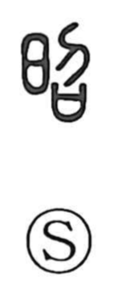

昭

Uncategorized
Kun: akiraka, arawasu | On: shou
bright ・ clear ・ to show
Explanation
This is a phono-semantic character whose original form was 邵, with 召 serving as the phonetic. In 召, Shirakawa sees a ritual scene: prayers written for the gods are placed in a covenant vessel (sai), and in answer to this offering the spirit of the deceased descends in human form. The component setsu depicts a kneeling person, so 邵 as a whole shows one bowing in reverence to welcome that descent. From this image of numinous power becoming manifest arose the senses “clear, evident,” and by extension “bright” and “to make apparent.” In bronze inscriptions the form 邵 is used; later texts came to write 昭, and 邵 fell out of use.